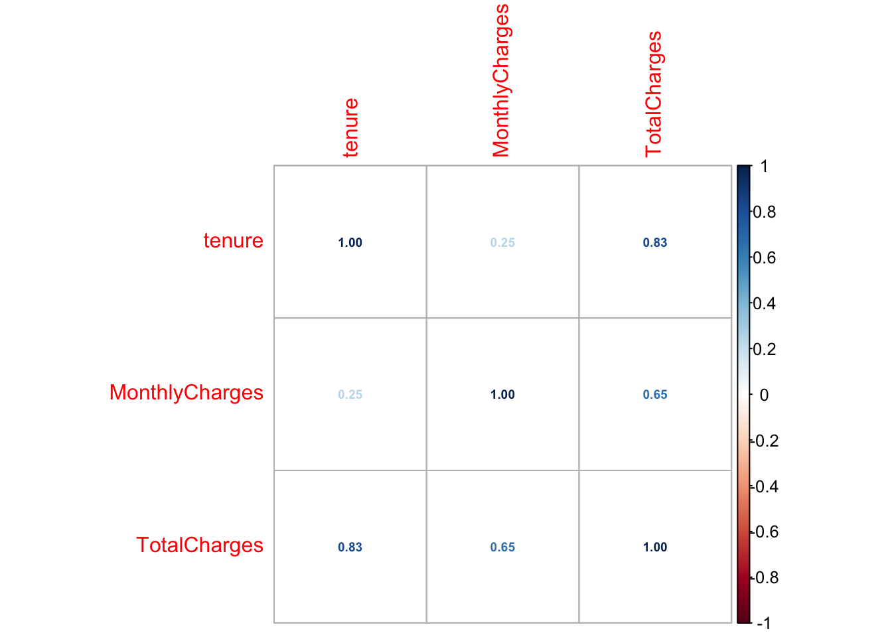

pacman::p_load(tidyverse, here, latex2exp, caret, skimr, corrplot, patchwork)
The downloaded binary packages are in
/var/folders/wv/lgj3n2yj54vgm1v7kbx4q_0r0000gn/T//Rtmpa61Fqv/downloaded_packages
latex2exp installedpacman::p_load(tidyverse, here, latex2exp, caret, skimr, corrplot, patchwork)
The downloaded binary packages are in
/var/folders/wv/lgj3n2yj54vgm1v7kbx4q_0r0000gn/T//Rtmpa61Fqv/downloaded_packages
latex2exp installedtelco_df <- read.csv(here('data', 'Telco-Customer-Churn.csv'))telco_df %>% mutate(
SeniorCitizen = as.factor(SeniorCitizen)
) %>%
select_if(is.numeric) %>%
cor() %>%
corrplot(method = 'number', number.cex = 0.6)
boxlist <- lapply(colnames(select_if(telco_df, is.numeric)),
function(col) {
ggplot(telco_df,
aes(y = .data[[col]], x = .data$Churn)) + geom_boxplot() + ggtitle(col)
}
)boxlist[[2]]
boxlist[[3]]boxlist[[4]]
denslist <- lapply(colnames(select_if(telco_df, is.numeric)),
function(col) {
ggplot(telco_df,
aes(x = .data[[col]], fill = .data$Churn, color = .data$Churn)) + geom_density(alpha = 0.5, stat = 'bin', bins=20) + ggtitle(col)
}
)denslist[[2]]denslist[[3]]denslist[[4]]histlist <- lapply(colnames(select_if(telco_df, is.numeric)),
function(col) {
ggplot(telco_df,
aes(x = .data[[col]])) + geom_histogram() + ggtitle(col)
}
)histlist[[2]]`stat_bin()` using `bins = 30`. Pick better value with `binwidth`.
histlist[[3]]`stat_bin()` using `bins = 30`. Pick better value with `binwidth`.histlist[[4]]`stat_bin()` using `bins = 30`. Pick better value with `binwidth`.barlist <- lapply(colnames(select_if(telco_df[!colnames(telco_df) %in% c('Churn', 'customerID')], is.character)),
function(col) {
ggplot(telco_df,
aes(x = .data[[col]], fill = .data$Churn)) + geom_bar(position = 'dodge') +
ggtitle(col) +
theme(legend.position.inside = c(0.8,0.8), legend.background = element_blank())
}
)for (x in seq((length(colnames(select_if(telco_df[!colnames(telco_df) %in% c('Churn', 'customerID')], is.character))) +1)/2)){
ifelse(x != 8,
print(barlist[[2*x - 1]] + barlist[[2*x]]),
print(barlist[[2*x - 1]])
)
}We can use the charts to explain results seen in our variable selection. If our model performs weird with everything, we can also use these to decide manually which to include/exclude.
#tenure, total charges, monthly charges
aovten <- aov(tenure ~ Churn, data = telco_df)
summary(aovten) Df Sum Sq Mean Sq F value Pr(>F)
Churn 1 530982 530982 1008 <2e-16 ***
Residuals 7030 3704983 527
---
Signif. codes: 0 '***' 0.001 '**' 0.01 '*' 0.05 '.' 0.1 ' ' 1aovtot <- aov(TotalCharges ~ Churn, data = telco_df)
summary(aovtot) Df Sum Sq Mean Sq F value Pr(>F)
Churn 1 1.438e+09 1.438e+09 291.3 <2e-16 ***
Residuals 7030 3.469e+10 4.934e+06
---
Signif. codes: 0 '***' 0.001 '**' 0.01 '*' 0.05 '.' 0.1 ' ' 1aovmo <- aov(MonthlyCharges ~ Churn, data = telco_df)
summary(aovmo) Df Sum Sq Mean Sq F value Pr(>F)
Churn 1 236713 236713 271.6 <2e-16 ***
Residuals 7030 6127508 872
---
Signif. codes: 0 '***' 0.001 '**' 0.01 '*' 0.05 '.' 0.1 ' ' 1anova is not likely appropriate for any of these variables, primarily due to the non-normality seen in the histograms, but we have it if we need it.
Wilcoxon Rank Sum could require same shape and spread, just different location, however this is a weak assumption.
Sign test is for one sample or paired samples.
Wilcoxon sign rank requires distribution symmetry, and one sample or paired.
Wilcoxon rank sum/two-sample test: two samples don’t need to be same size, non parametric alt to two sample t-test. Could work.
Kruskal-Wallis Test: generalize version of rank sum, for more than 2 samples, so no applicable for response variable. Could be used for continuous explanatory x categorical explanatory.
We perform the Wilcoxon Rank Sum test due to the nature of our continuous variables. For tenure, MonthlyCharges, and TotalCharges, the distributions are non-normal and have potential differences in spread. Some argue we may be able to utilize anova, due to the large sample size in both distributions, however Non-parametric methods may offer more powerful results given the violations of assumptions. The Wilcoxon Rank sum test is the most appropriate for all three variables, due to the varying sizes of the observations across the different class levels of Churn; we would not be able to perform paired tests like the sign rank test.
Note that the structure of these tests will be that we will use our binary response variable to separate our two samples. We will then test the distributions/statistics of our continuous explanatory variable. This may seem counterintuitive, but the intent is this: If we have differences in our explanatory variable distribution when a customer is churned vs not churned, then the variable would likely have an effect on the prediction of a customer churning.
Assumptions
- The samples do not need to be the same size
- Independent Samples
- The samples should have the same distribution (weak assumption)
Hypotheses
\(H_{0}:\) The two samples come from the same distribution.
\(H_{1}:\) The two samples do not come from the same distribution.
Type I error
\(\alpha = 0.05\)
wilcoxdf0 <- telco_df %>%
select(tenure, TotalCharges, MonthlyCharges, Churn) %>%
filter(Churn == 'No')
wilcoxdf1 <- telco_df %>%
select(tenure, TotalCharges, MonthlyCharges, Churn) %>%
filter(Churn == 'Yes')wilten <- wilcox.test(wilcoxdf1$tenure, wilcoxdf0$tenure, paired = FALSE, alternative = 'two.sided')
wilten
Wilcoxon rank sum test with continuity correction
data: wilcoxdf1$tenure and wilcoxdf0$tenure
W = 2494979, p-value < 2.2e-16
alternative hypothesis: true location shift is not equal to 0For tenure, we get a W value of 2.494979^{6}, which results in a p-value of 6.0430466^{-211}. Against an alpha level of 0.05, we reject the null hypotheses that the tenure distribution of customers that have churned is the same as the distribution for those that have not churned.
wilmo <- wilcox.test(wilcoxdf1$MonthlyCharges, wilcoxdf0$MonthlyCharges, paired = FALSE, alternative = 'two.sided')
wilmo
Wilcoxon rank sum test with continuity correction
data: wilcoxdf1$MonthlyCharges and wilcoxdf0$MonthlyCharges
W = 5986148, p-value < 2.2e-16
alternative hypothesis: true location shift is not equal to 0For Monthly Charges, we get a W value of 5.9861485^{6}, which results in a p-value of 8.467195^{-54}. Against an alpha level of 0.05, we reject the null hypotheses that the Monthly Charges distribution of customers that have churned is the same as the distribution for those that have not churned.
wiltot <- wilcox.test(wilcoxdf1$TotalCharges, wilcoxdf0$TotalCharges, paired = FALSE, alternative = 'two.sided')
wiltot
Wilcoxon rank sum test with continuity correction
data: wilcoxdf1$TotalCharges and wilcoxdf0$TotalCharges
W = 3360665, p-value < 2.2e-16
alternative hypothesis: true location shift is not equal to 0For Total Charges, we get a W value of 3.360665^{6}, which results in a p-value of 1.9959849^{-84}. Against an alpha level of 0.05, we reject the null hypotheses that the Total Charges distribution of customers that have churned is the same as the distribution for those that have not churned.
We can see that the continuous variables all have different distributions depending on whether the customer has churned or not. Given this, as well as what was seen in the charts, it is likely we will see some sort of affect on the probability in Churn when we fit a model later on. We do still need to be aware of multicollinearity, particulary between tenure and Total Charges. Our variable selection may take care of this, but still something we should watch out for.
Last thing, some quick cleaning scripts because we probably need this later.
telco_df <- telco_df %>% mutate(
SeniorCitizen = as.factor(SeniorCitizen)
) %>%
mutate(across(colnames(select_if(telco_df, is.character)), ~as.factor(.x))) %>%
select(-customerID)